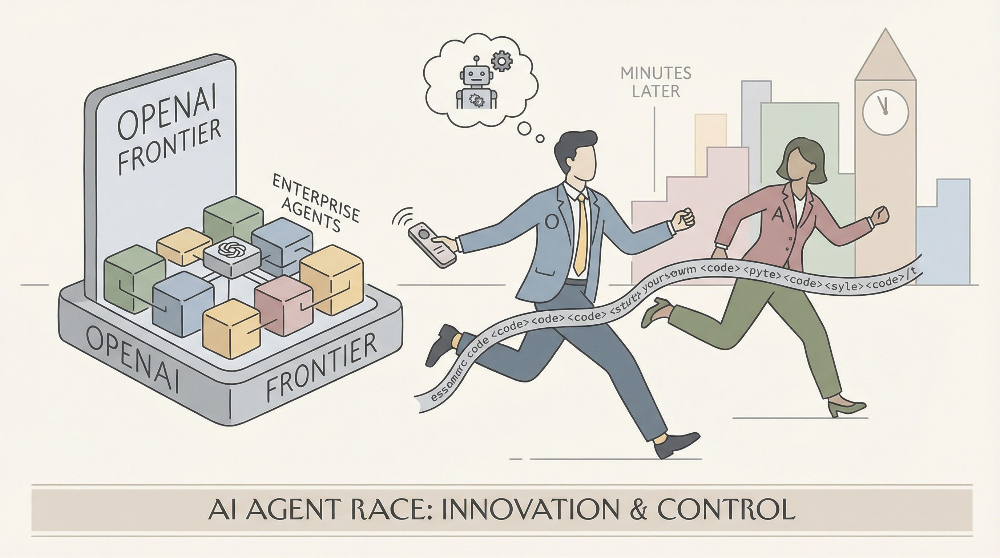

OpenAI发布新编码模型，旨在加速Codex的能力。
两克伴AIGC日报
2026-02-06 星期五

本期关注：OpenAI推出代理编码模型GPT-5.3-Codex及企业AI代理管理平台Frontier，Anthropic发布Claude Opus 4.6，两者在图像生成、AGI分数及代理任务执行上展现突破，推动AI代理与模型性能竞争升级。
📰 行业动态
OpenAI推出企业平台Frontier，帮助企业构建和管理AI智能体。
OpenAI Frontier平台旨在帮助企业管理AI智能体，简化部署流程。
OpenAI推出新平台，助力企业部署AI智能体，加强自动化领域领导地位。
Anthropic发布Claude Opus 4.6，能更谨慎规划并长时间执行代理任务。
🔥 今日焦点
今日，AI领域迎来两大重要模型更新。Anthropic发布了Opus 4.6，OpenAI则推出了GPT-5.3-Codex。这两个模型在短短15分钟内相继发布，标志着AI技术的新突破。
Opus 4.6和GPT-5.3-Codex的核心内容在于提升了模型在图像识别和生成方面的能力。通过对比两者的“海鸥”生成效果，可以看出Opus 4.6在细节呈现上更为出色，而GPT-5.3-Codex则更偏向于线稿风格。这一对比表明，不同模型在图像处理方面各有侧重，为AI领域提供了更多可能性。
近日，在ARC Prize官网发布的最新排行榜上，Claude Opus 4.6模型在非精炼模型中取得了迄今为止最高的ARC-AGI分数。尽管ARC-AGI-1分数仅比GPT 5.2精炼模型低0.5%，ARC-AGI-2分数也仅低4%，但其在成本上却不到GPT 5.2精炼模型十分之一。令人惊讶的是，“max”变体的分数实际上略低于“high”变体。这一成果标志着在AI领域，非精炼模型在性能和成本效益方面取得了显著突破，对推动AI技术的发展具有重要意义。
---
在《教育创新》一文中，作者探讨了人工智能代理如何重新定义通用设计，以提升无障碍性。文章指出，随着人工智能技术的不断发展，AI代理在优化产品设计、提升用户体验方面展现出巨大潜力。核心内容概述了AI代理如何通过分析用户需求和行为，实现个性化设计，从而打破传统设计的局限性，为不同需求的人群提供更加便捷和友好的使用体验。
这一理念的重要性在于，它不仅有助于推动社会公平，让更多人享受到科技进步带来的便利，而且对于AI领域的发展具有重要意义。首先，AI代理在通用设计中的应用，将促进AI技术的普及和深化，推动AI与各行各业的融合。其次，通过提升无障碍性，AI代理有助于解决当前社会面临的老龄化、残障人士等特殊群体面临的挑战，推动社会和谐发展。
📚 深度长文
《The Download：追踪AI与下一代核能》一文深入探讨了人工智能领域的最新动态。文章指出，每当OpenAI、谷歌或Anthropic发布新一代大型语言模型时，AI界都会密切关注。作者Rhiannon Williams通过分析METR等关键指标，揭示了AI领域最被误解的图表。文章还探讨了核能领域的未来发展趋势，分析了下一代核能技术的潜力。本文不仅提供了对AI和核能领域的深入见解，还展现了作者独特的专业视角，对AI从业者具有极高的阅读价值。
---
本文深入探讨了人工智能领域中最被误解的图表，揭示了其背后的复杂性和重要性。作者Grace Huckins从MIT Technology Review的角度，对AI社区普遍关注的重大语言模型进行了剖析。文章指出，每当OpenAI、谷歌或Anthropic发布新的前沿大语言模型时，AI社区都会紧张关注。然而，只有当METR（一个AI模型）出现，我们才能真正理解这些模型的价值。文章通过详实的论据和独特的见解，揭示了这一图表在AI发展中的关键作用，为读者提供了对AI领域的深刻洞察。对于AI从业者而言，本文具有极高的阅读价值，有助于他们更好地理解AI技术的未来发展趋势。
---
本文深入探讨了Goodfire AI的Myra Deng与Mark Bissell共同创立的“首个机制可解释性前沿实验室”的创新成果。文章核心观点在于，通过构建一个全新的机制可解释性框架，该实验室旨在解决当前深度学习领域中的可解释性问题。关键论据包括实验室提出的创新方法，如基于注意力机制的模型解释、基于知识图谱的模型解释等，这些方法在多个实际应用场景中取得了显著成效。
阅读本文，读者不仅能了解到机制可解释性前沿实验室的研究进展，还能对深度学习领域的可解释性问题有更深入的认识。文章的深度和独特见解体现在对现有可解释性方法的批判性分析，以及对未来研究方向的前瞻性思考。对于AI从业者而言，本文具有较高的阅读价值，有助于拓宽视野，激发创新思维。
🛠️ 产品推荐
I built a virtual filesystem to replace MCP for AI agents，该产品将所有数据源整合为虚拟文件系统，为AI代理提供便捷的数据访问。通过连接服务、创建自然语言“智能文件夹”，用户可轻松访问各类数据，如邮件、文档等，无需编写繁琐的粘合代码，节省大量时间和资源。Airstore有效解决了传统MCP配置复杂、权限过宽、查询效率低等问题，为AI应用提供高效、安全的数据支持。
---
DeepBrainz-R1是一款针对智能工作流程的推理优先小型语言模型家族，旨在提供多步骤推理、工具调用稳定性以及代理管道中输出方差降低等功能。该系列模型不针对角色扮演或创意写作优化，旨在实现小参数规模下的可预测推理行为。DeepBrainz-R1包括R1-4B（旗舰）、R1-2B、R1-0.6B-v2等型号，并提供实验性长上下文变体。该产品通过强化学习等方法，有效解决传统AI模型在智能工作流程中的推理稳定性问题，为用户带来高效、可靠的推理能力。